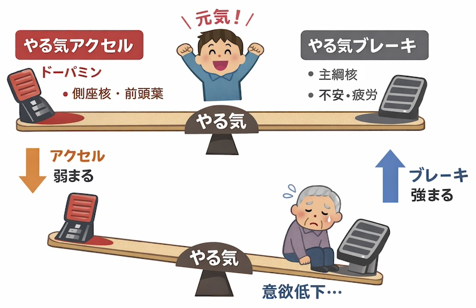

公開日：2026年8月｜最終更新：2026年8月
トップページに戻る
やる気（意欲）の低下はなぜ起こるのか。その原因を洗い出し、「やる気」を高める方策、日々の実践方法を考えます。
第１章「やる気」の低下はなぜ起こるのか
「加齢」にともない、次のようなことが起こります。
(1) 脳・神経の変化
- 意欲に関係する神経伝達物質である「ドーパミン」の分泌が低下
- 前頭葉の働きが低下（計画・意欲の低下）
- 軽度の認知機能の低下
「やる気」「計画性」が弱くなることがあります。
「やる気＝気合い」ではなく、「脳の働き」の問題 です。
(2) 身体的な要因
- 筋力低下・活動量低下
- 慢性的な疲労
- 睡眠の質の低下
- 慢性疾患
「動くのがしんどい」ことが、
そのまま「やる気」の低下につながります。
(3) 心理・精神的要因
- 孤独感
- 喪失体験（配偶者・役割）
- 不安・抑うつ
- 自己肯定感の低下（どうせできない！）
軽度のうつ状態でも、「意欲」は大きく低下します。
(4) 社会・環境要因
- 外出機会の減少
- 人との交流の減少
- 生活の変化（退職など）
「やる気」は環境で大きく変わります
第２章 加齢との関係
加齢そのものよりも
- 活動量の低下
- 社会参加の減少
- 慢性疾患の影響が大きい
「年だからやる気がなくなる」のではなく、
活動量の低下や社会参加の減少が大きく影響します。
第３章 放置するとどうなるか
- 活動量低下 → 筋力低下 → 転倒リスク増加
- 外出減少 → 認知機能低下
- 孤立 → 抑うつ傾向
「やる気」は健康維持の「起点」です。
第４章 「やる気」を高める対処法
ここが一番実用的です
(1) 行動の工夫
- 5分だけ動く（小さな目標）
- 生活をルーティン化する
- 朝の光を浴びる
- 予定を入れる
「やる気があるから動く」のではなく、
「動くからやる気が出る」ことが重要です。
(2) 身体面
- 軽い運動（ウォーキングやスクワットなど）
- 睡眠改善
筋肉を動かすことで、脳が活性化し、
「意欲」の向上につながります。
(3) 社会参加
役割が「やる気」を生みます。
コラム：やる気が出ないときこそ「軽い運動」から
「やる気が出ないから動けない」と感じることは多いものです。
しかし実際には、
動くことでやる気が生まれることが分かっています。
特に高齢者では、軽い運動を行うことで、
筋肉だけでなく脳も活性化し、気分の改善につながります。
おすすめは、「頑張らない運動」です。
こうした中で、「楽しさ」や「人との交流」が加わると、
さらに継続しやすくなります。
例えばテニスは、
- 無理のない運動量
- 相手とのコミュニケーション
- 自然と笑顔が生まれる環境
といった特徴があり、やる気の維持にも役立つ活動の一つです。
最初は「少し体を動かすだけ」でも構いません。
気がつけば、外に出ることや人と関わることが楽しみになり、
やる気の回復につながっていきます。
やる気は、待つものではなく、動くことで引き出されるものです。
第５章 「やる気」を支える栄養
- タンパク質：神経伝達物質の材料（不足すると意欲低下）
- ビタミンB群：脳のエネルギー代謝（不足すると倦怠感）
- 鉄：不足すると疲労感
- オメガ3脂肪酸：脳機能の維持（青魚から）
「やる気」は栄養状態に大きく左右されます
第６章 まとめ
高齢者の「やる気」低下は、加齢そのものではなく、
身体・脳・心理・社会環境が複雑に関係しています。
適切な運動、栄養、社会参加により、
改善が期待できる重要な健康指標です。
第７章 おまけ：「やる気」のアクセルとブレーキ
最近の神経科学では、「やる気を出す系（アクセル）」と「やり過ぎを抑える（ブレーキ）」が、拮抗していると考えられています。
(1) アクセル側
- 報酬系
- ドーパミンなど
- 主な領域：側座核、前頭前野
「やりたい」「楽しい」を生みます
(2) ブレーキ側
- 抑制、回避、不安
- 主な領域：主綱核、扁桃体、前帯状皮質など
「面倒」「失敗したくない」「やめておこう」を生みます

重要なポイント
このブレーキも、
に必要な機能です。
高齢者では何が起こっているか
アクセル低下（ドーパミン低下、報酬感受性低下）→ 「楽しいと感じにくい」
ブレーキ優位になりやすい → 「不安・失敗回避の増加」「体力低下」「慢性疲労」→ 「やらない理由」が増える
最近の研究では、「やる気を高める仕組み」だけでなく、「やる気にブレーキをかける脳の働き」も存在することが分かってきました。
高齢者では、このバランスが崩れ、行動を控える方向に傾きやすいと考えられています。
第８章 おまけ：実践編
ブレーキを外すのではなく、「アクセルを少しづつ踏む」ことが重要です。
具体的に
(1) 小さな成功体験（５分散歩、簡単な運動）
「できた！」がドーパミンを出す！
(2) 不安を減らす（一人でやらない、安全な環境）
ブレーキを弱めます
(3) 楽しさを組み込む（会話、笑い、ゲーム性）
「報酬系」を刺激します
(4) 例：テニスを楽しむ！
テニスは：
- 成功体験が得やすい（当たるだけでOK）
- 社会交流がある
- 適度な運動負荷がかかる
- 笑いや会話が生まれる
「アクセル」を上げつつ、「ブレーキ」を自然に弱める活動なのです。
■ 参考文献
- 厚生労働省：健康づくりのための身体活動・運動ガイド
- 日本老年医学会：高齢者の生活機能と健康管理に関する指針
- World Health Organization (WHO): Healthy Ageing
- 日本神経学会：神経伝達物質と脳機能に関する資料
- 日本うつ病学会：高齢者うつ病の診療ガイドライン
トップページに戻る